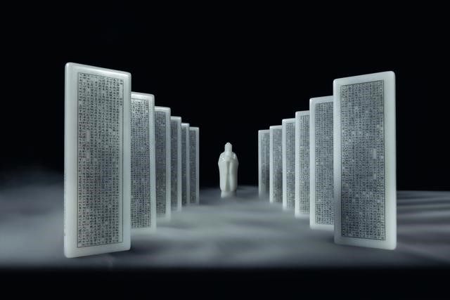

规格：20.5cm×7cm×1.6cm×12
重量：660g×12

该套组雕共镌刻了15900字的《论语》主文，分布在12块玉牌上，而每块玉牌规格为长20.5厘米、宽7厘米、厚1.6厘米，重达660克。此套玉册组雕还包括重2685克的“孔子圣迹图”玉牌四块、重1877克的“论语”题匾一块及重749克的孔子圆雕圣像一尊。而全套作品的原材料则为一块足有32公斤重的和田玉籽料，其珍贵性与难得性可想而知。